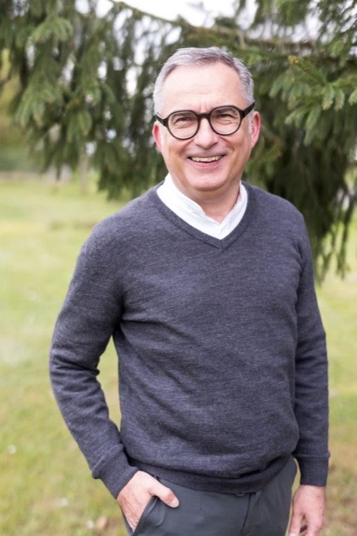

Ich begleite Menschen auf dem Weg zur Klarheit über ihre Berufung.
Mit Fragen, Stille und der Tora als Lebensschule.
Berufung erkennen. Aus Klarheit wirken.
Die Menschen, die zu mir kommen, haben selten ein klar umrissenes Problem. Sie haben etwas anderes: das Gefühl, dass ihr bisheriges Leben sie nicht mehr trägt. Die Rollen, die Sicherheiten, manchmal sogar die Erfolge.
„Mein bisheriges Leben trägt nicht mehr.“
„Ich weiß nicht mehr, wofür ich das alles mache.“
„Ich habe viel erreicht, aber weiß nicht, wozu ich hier bin.“
„Ich bin offen für Gott. Aber die Kirche erreicht mich nicht.“
Wenn dir einer dieser Sätze bekannt vorkommt, bist du hier richtig. Es braucht keinen Glauben als Voraussetzung. Es braucht nur die Bereitschaft, das Bisherige noch einmal zu prüfen.
Berufung wird oft mit Begabung verwechselt. Oder mit einem Wunsch. Oder mit einer guten Idee. Sie ist etwas anderes.
Das klingt groß. In Wahrheit ist es sehr konkret. Berufung wird nicht erfunden. Sie wird freigelegt. Sie liegt meist längst in einem Menschen – verdeckt von Dingen, die sich über Jahre darübergelegt haben.
Was ich nicht tue: Ich sage dir nicht, was Gott von dir will. Das steht mir nicht zu. Ich höre zu, frage und schaffe einen Raum, in dem du selbst klarer erkennst, wozu du gerufen bist.
Das Bild, das meine Arbeit trägt, ist nicht Erfolg. Es ist der Auszug. Ein Mensch ist nicht deshalb am falschen Ort, weil äußerlich alles schlecht wäre – sondern weil er sich von seiner eigentlichen Sendung entfernt hat.
Das hebräische Wort für Ägypten heißt Mizrajim. Es kommt von mezar: Enge. Der Weg heraus ist immer derselbe – aus der Enge in die Weite.
Das bisherige Leben trägt nicht mehr. Rollen, Angst, Status, Geld und die Erwartungen anderer engen ein.
Zuhören, Fragen und Stille schaffen einen Raum, in dem das Gewohnte seine Macht verliert.
Die Tora und die Deutungsmodelle der jüdischen Überlieferung machen innere Muster sichtbar und geben dem Weg eine Sprache.
Klarheit stellt sich nicht nur gedanklich ein. Sie stellt sich als Freiheit ein. Daran erkennst du, dass es stimmt.
Die erkannte Berufung wird gelebt – persönlich, und bei Unternehmern in einer konkreten Unternehmung.
Meine Arbeitsweise ist kein System, das man kaufen kann. Ihre Kraft liegt in der Reduktion.
Ich dränge dir keine Antwort auf. Ich stelle die Frage so, dass sichtbar wird, was sich über deine Berufung gelegt hat: Selbsttäuschung, fremde Erwartungen, alte Rollen.
Wir lösen nicht sofort. Stille trennt vom ständigen Lärm und lässt das Wesentliche hörbar werden. Das ist kein Umweg. Das ist der Weg.
Tora und die jüdische Deutungstradition dienen als Landkarten der Seele – nicht als Schmuck und nicht als Geheimwissen. Fachbegriffe erkläre ich. Vorwissen setze ich nicht voraus.
Die Tora ist nicht mein Produkt. Sie ist mein Weg zur Antwort. Menschen wachen morgens nicht mit dem Gedanken auf, sie bräuchten eine Schriftauslegung. Sie wachen mit der Frage auf: Wozu das alles?
Gottes Anleitung zum Leben – geschrieben für Menschen, die tatsächlich leben müssen.
Ein Spiegel, in dem der Mensch sich selbst erkennt. Nicht immer angenehm. Aber ehrlich.
Eine Landkarte der menschlichen Seele. Sie zeigt nicht nur, wo du bist – sondern auch, wo es hingeht.
Ich lege die Tora fortlaufend aus – von Bereschit bis Dewarim, unter einer einzigen Frage: Was sagt dieser Text über die menschliche Seele, über Berufung, über Exil und Befreiung?
Immer auf drei Ebenen: der Text, der innere Mensch, die konkrete Lebensbewegung. Am Ende steht eine einzige Frage an dich.
Die Reihe wächst Folge für Folge. Sie ist als Lebenswerk angelegt, nicht als Kampagne.
Für Unternehmer, Gründer und Führungskräfte wird dieselbe Frage sehr konkret. Es geht nicht darum, ein besseres Unternehmen zu führen. Es geht um ein Unternehmen, das aus Berufung gestaltet ist.
Ich habe selbst gegründet, geführt und Verantwortung getragen. Ich weiß, wie sich die Frage anfühlt, wenn Zahlen stimmen und trotzdem etwas fehlt.
Unternehmen aus Berufung. Wirkung aus Klarheit.
Mein Hauptangebot ist keine Kursreihe und kein Coachingprogramm. Es ist die persönliche Begleitung eines einzelnen Menschen in einer Zeit, in der vieles offen ist.
Menschen zwischen etwa fünfunddreißig und fünfundsechzig, die spürten, dass ihr bisheriges Lebensmodell nicht mehr trägt. Mit oder ohne Glauben. Mit einem Schwerpunkt auf Unternehmern und Führungskräften.
Einzelgespräche über einen längeren Zeitraum. Dazwischen Zeit zum Nachgehen. Kein Wochenprogramm, keine Hausaufgaben, keine Abschlussurkunde.
Vom nicht mehr tragenden Bisherigen zu Klarheit, Weite und einem nächsten wahrhaftigen Schritt. Was dieser Schritt ist, weiß am Ende nur einer: du.
Eine wichtige Abgrenzung. Berufungsbegleitung ist keine Psychotherapie und ersetzt keine medizinische Behandlung. Existenzielle Krisen können psychische Erkrankungen berühren. Wenn ich merke, dass du etwas anderes brauchst als das, was ich anbiete, sage ich es dir.

Ich bin Unternehmer. Geschäftsführer einer gemeinnützigen GmbH, Gesellschafter eines Familienbetriebes. Ich bin kein Theologe und kein Therapeut.
Was ich über die Tora sage, habe ich nicht studiert, um es zu lehren. Ich habe es gesucht, weil ich Antworten brauchte. Seit Jahren lese ich die hebräische Bibel mit den Augen der jüdischen Auslegungstradition – bei Lehrern wie Friedrich Weinreb und in den Texten des Sohar und der Tanya.
Aus dieser Verbindung ist meine Arbeit entstanden: unternehmerische Erfahrung auf der einen Seite, ein sehr alter Text auf der anderen. Beides gehört für mich zusammen.
Es gibt keinen Anmeldeprozess und kein Paket. Wenn dich etwas auf dieser Seite berührt hat, schreib mir. Wir sprechen einmal miteinander und schauen, ob es passt.
Wenn nicht, sage ich es dir ehrlich. Diese Arbeit ist nicht für alle. Aber für die Richtigen.